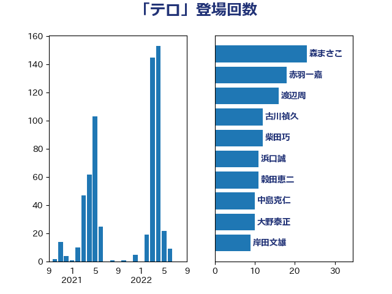

単語「テロ」

| 森まさこ | 自由民主党 | 23 回 |
| 赤羽一嘉 | 公明党 | 18 回 |
| 渡辺周 | 立憲民主党 | 16 回 |
| 古川禎久 | 自由民主党 | 12 回 |
| 柴田巧 | 日本維新の会 | 12 回 |
| 浜口誠 | 国民民主党 | 11 回 |
| 穀田恵二 | 日本共産党 | 11 回 |
| 中島克仁 | 立憲民主党 | 10 回 |
| 大野泰正 | 自由民主党 | 10 回 |
| 岸田文雄 | 自由民主党 | 9 回 |
| 茂木敏充 | 自由民主党 | 9 回 |
| 藤巻健太 | 日本維新の会 | 9 回 |
| 逢坂誠二 | 立憲民主党 | 9 回 |
| 青木愛 | 立憲民主党 | 9 回 |
| 山崎誠 | 立憲民主党 | 8 回 |
| 辻元清美 | 立憲民主党 | 8 回 |
| 鈴木俊一 | 自由民主党 | 8 回 |
| 菅直人 | 立憲民主党 | 7 回 |
| 下条みつ | 立憲民主党 | 6 回 |
| 北神圭朗 | 無所属 | 6 回 |
| 山谷えり子 | 自由民主党 | 6 回 |
| 羽田次郎 | 立憲民主党 | 6 回 |
| 麻生太郎 | 自由民主党 | 6 回 |
| 倉林明子 | 日本共産党 | 5 回 |
| 岸信夫 | 自由民主党 | 5 回 |
| 東徹 | 日本維新の会 | 5 回 |
| 玉木雄一郎 | 国民民主党 | 5 回 |
| 萩生田光一 | 自由民主党 | 5 回 |
| 上川陽子 | 自由民主党 | 4 回 |
| 加藤勝信 | 自由民主党 | 4 回 |
| 吉田宣弘 | 公明党 | 4 回 |
| 小林鷹之 | 自由民主党 | 4 回 |
| 後藤茂之 | 自由民主党 | 4 回 |
| 新藤義孝 | 自由民主党 | 4 回 |
| 田中健 | 国民民主党 | 4 回 |
| 田村智子 | 日本共産党 | 4 回 |
| 伊波洋一 | 無所属 | 3 回 |
| 平木大作 | 公明党 | 3 回 |
| 有村治子 | 自由民主党 | 3 回 |
| 末松信介 | 自由民主党 | 3 回 |
| 本田顕子 | 自由民主党 | 3 回 |
| 松野博一 | 自由民主党 | 3 回 |
| 池下卓 | 日本維新の会 | 3 回 |
| 熊谷裕人 | 立憲民主党 | 3 回 |
| 牧山ひろえ | 立憲民主党 | 3 回 |
| 石井章 | 日本維新の会 | 3 回 |
| 鈴木貴子 | 自由民主党 | 3 回 |
| 高橋千鶴子 | 日本共産党 | 3 回 |
| 鬼木誠 | 立憲民主党 | 3 回 |
| 世耕弘成 | 自由民主党 | 2 回 |
| 中川正春 | 立憲民主党 | 2 回 |
| 和田有一朗 | 日本維新の会 | 2 回 |
| 塩田博昭 | 公明党 | 2 回 |
| 奥野総一郎 | 立憲民主党 | 2 回 |
| 宗清皇一 | 自由民主党 | 2 回 |
| 小熊慎司 | 立憲民主党 | 2 回 |
| 小西洋之 | 立憲民主党 | 2 回 |
| 山本太郎 | れいわ新選組 | 2 回 |
| 山田賢司 | 自由民主党 | 2 回 |
| 岡田克也 | 立憲民主党 | 2 回 |
| 川田龍平 | 立憲民主党 | 2 回 |
| 林芳正 | 自由民主党 | 2 回 |
| 柳本顕 | 自由民主党 | 2 回 |
| 津島淳 | 自由民主党 | 2 回 |
| 浦野靖人 | 日本維新の会 | 2 回 |
| 猪口邦子 | 自由民主党 | 2 回 |
| 田所嘉徳 | 自由民主党 | 2 回 |
| 神谷裕 | 立憲民主党 | 2 回 |
| 稲田朋美 | 自由民主党 | 2 回 |
| 美延映夫 | 日本維新の会 | 2 回 |
| 自見はなこ | 自由民主党 | 2 回 |
| 赤池誠章 | 自由民主党 | 2 回 |
| 足立康史 | 日本維新の会 | 2 回 |
| 鈴木庸介 | 立憲民主党 | 2 回 |
| 阿部知子 | 立憲民主党 | 2 回 |
| 三木亨 | 自由民主党 | 1 回 |
| 上田清司 | 国民民主党 | 1 回 |
| 下村博文 | 自由民主党 | 1 回 |
| 中谷一馬 | 立憲民主党 | 1 回 |
| 中野洋昌 | 公明党 | 1 回 |
| 井上信治 | 自由民主党 | 1 回 |
| 伊佐進一 | 公明党 | 1 回 |
| 伊藤俊輔 | 立憲民主党 | 1 回 |
| 佐藤啓 | 自由民主党 | 1 回 |
| 加藤鮎子 | 自由民主党 | 1 回 |
| 北側一雄 | 公明党 | 1 回 |
| 國場幸之助 | 自由民主党 | 1 回 |
| 城井崇 | 立憲民主党 | 1 回 |
| 塩村あやか | 立憲民主党 | 1 回 |
| 大塚耕平 | 国民民主党 | 1 回 |
| 大家敏志 | 自由民主党 | 1 回 |
| 大西健介 | 立憲民主党 | 1 回 |
| 室井邦彦 | 日本維新の会 | 1 回 |
| 小山展弘 | 立憲民主党 | 1 回 |
| 小野泰輔 | 日本維新の会 | 1 回 |
| 山下雄平 | 自由民主党 | 1 回 |
| 山岡達丸 | 立憲民主党 | 1 回 |
| 山本博司 | 公明党 | 1 回 |
| 山添拓 | 日本共産党 | 1 回 |
| 岡本あき子 | 立憲民主党 | 1 回 |
| 岡本三成 | 公明党 | 1 回 |
| 岩谷良平 | 日本維新の会 | 1 回 |
| 岬麻紀 | 日本維新の会 | 1 回 |
| 工藤彰三 | 自由民主党 | 1 回 |
| 平井卓也 | 自由民主党 | 1 回 |
| 徳永久志 | 立憲民主党 | 1 回 |
| 斎藤アレックス | 国民民主党 | 1 回 |
| 新垣邦男 | 立憲民主党 | 1 回 |
| 木原誠二 | 自由民主党 | 1 回 |
| 木村次郎 | 自由民主党 | 1 回 |
| 本村伸子 | 日本共産党 | 1 回 |
| 杉田水脈 | 自由民主党 | 1 回 |
| 松原仁 | 立憲民主党 | 1 回 |
| 松本尚 | 自由民主党 | 1 回 |
| 枝野幸男 | 立憲民主党 | 1 回 |
| 森本真治 | 立憲民主党 | 1 回 |
| 榛葉賀津也 | 国民民主党 | 1 回 |
| 武田良太 | 自由民主党 | 1 回 |
| 河西宏一 | 公明党 | 1 回 |
| 浅野哲 | 国民民主党 | 1 回 |
| 田島麻衣子 | 立憲民主党 | 1 回 |
| 石井拓 | 自由民主党 | 1 回 |
| 石井苗子 | 日本維新の会 | 1 回 |
| 神津たけし | 立憲民主党 | 1 回 |
| 福山哲郎 | 立憲民主党 | 1 回 |
| 稲富修二 | 立憲民主党 | 1 回 |
| 空本誠喜 | 日本維新の会 | 1 回 |
| 篠原豪 | 立憲民主党 | 1 回 |
| 船橋利実 | 自由民主党 | 1 回 |
| 芳賀道也 | 国民民主党 | 1 回 |
| 荒井優 | 立憲民主党 | 1 回 |
| 菅義偉 | 自由民主党 | 1 回 |
| 菊田真紀子 | 立憲民主党 | 1 回 |
| 蓮舫 | 立憲民主党 | 1 回 |
| 西村康稔 | 自由民主党 | 1 回 |
| 西村智奈美 | 立憲民主党 | 1 回 |
| 西田昌司 | 自由民主党 | 1 回 |
| 赤木正幸 | 日本維新の会 | 1 回 |
| 道下大樹 | 立憲民主党 | 1 回 |
| 野田国義 | 立憲民主党 | 1 回 |
| 金城泰邦 | 公明党 | 1 回 |
| 金子俊平 | 自由民主党 | 1 回 |
| 金田勝年 | 自由民主党 | 1 回 |
| 鎌田さゆり | 立憲民主党 | 1 回 |
| 阿達雅志 | 自由民主党 | 1 回 |
| 阿部弘樹 | 日本維新の会 | 1 回 |
| 青山繁晴 | 自由民主党 | 1 回 |
| 高市早苗 | 自由民主党 | 1 回 |
| 高木かおり | 日本維新の会 | 1 回 |
| 高野光二郎 | 自由民主党 | 1 回 |
| 高階恵美子 | 自由民主党 | 1 回 |